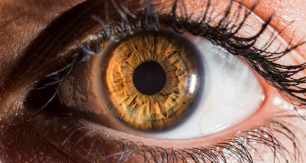
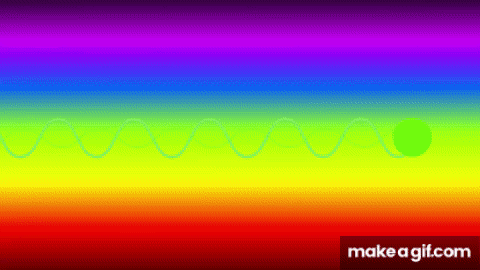

👁️ Luz Visible y Percepción Humana
El ojo humano como detector
La luz visible es la parte del espectro electromagnético que el ojo humano puede percibir. Su rango va desde los 400 nm (violeta) hasta los 700 nm (rojo). Los receptores visuales llamados conos y bastones permiten detectar diferentes colores e intensidades, haciendo posible la visión.

Colores y longitudes de onda
Cada color visible corresponde a una longitud de onda diferente:
| Color | Longitud de onda |
|---|---|
| Violeta | 400–450 nm |
| Azul | 450–495 nm |
| Verde | 495–570 nm |
| Amarillo | 570–590 nm |
| Naranja | 590–620 nm |
| Rojo | 620–700 nm |

Fenómenos ópticos
- Reflexión: la luz rebota en superficies pulidas.
- Refracción: cambia de dirección al pasar entre medios.
- Dispersión: separación de colores, como en un arcoíris.
- Interferencia: combinación de ondas que generan patrones de luz y sombra.